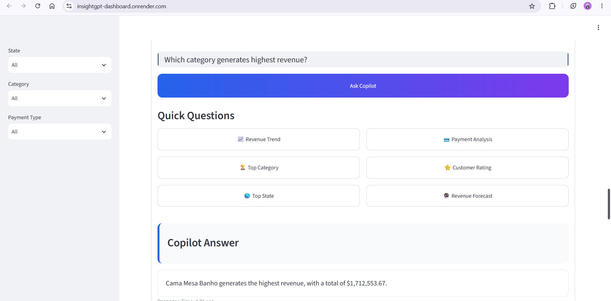
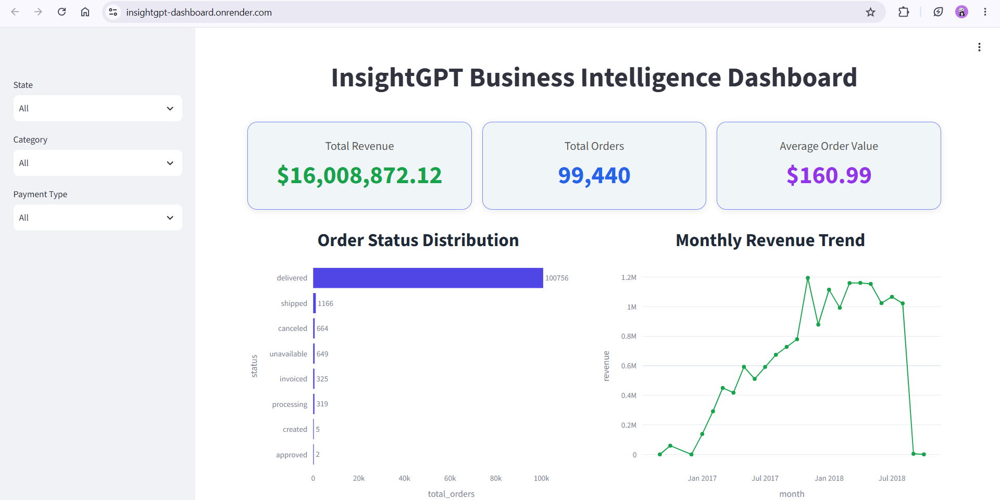
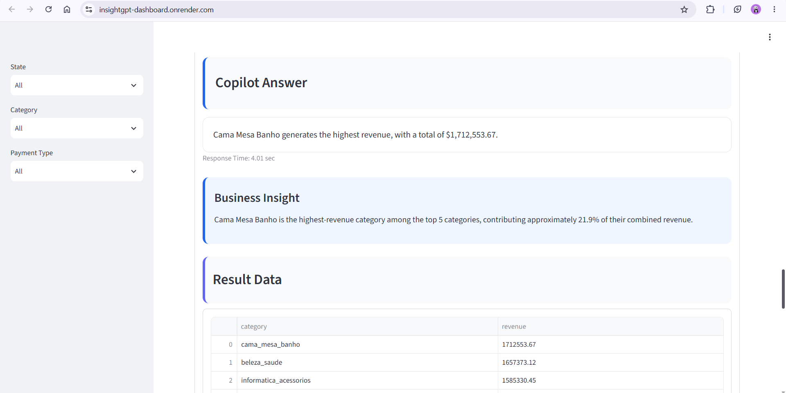
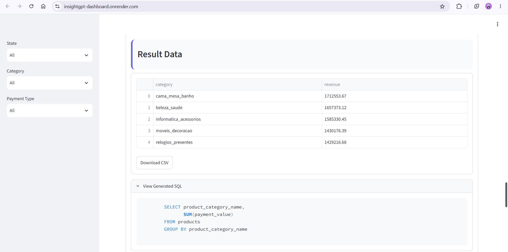
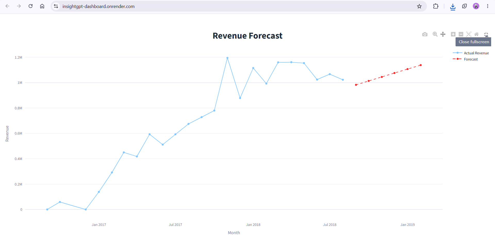

AI-powered Business Intelligence Copilot that transforms natural-language business questions into SQL analysis, data-driven insights, visualizations and actionable recommendations.
Business teams often depend on analysts to translate business questions into SQL queries, reports and dashboards before they can make decisions. InsightGPT reduces this gap by allowing users to ask business questions in natural language and receive analytical results, insights and recommendations.
InsightGPT combines Business Intelligence, SQL analytics, Generative AI, REST APIs, interactive visualization and predictive analytics into a single decision-support platform.
Ask business questions in natural language instead of manually writing SQL queries.

Users ask business questions using everyday language without writing SQL.
Gemini converts the business question into an analytical SQL query.
Generated SQL is validated before execution to provide a safety layer for database operations.
Validated analytical queries are executed against the PostgreSQL business database.
Query results can be explored through tables and interactive visualizations.
Analytical results are translated into business insights and recommendations.
Interactive KPI monitoring and business performance analysis across revenue, orders, categories and customers.

Total Revenue
Total Orders
Average Order Value
Order Records
InsightGPT connects the generated SQL result with business interpretation instead of returning raw data alone.

The generated SQL can be inspected by the user, providing transparency into how the AI produced the result.

Analyze total revenue, monthly trends, average order value and category performance.
Analyze customer reviews, ratings and customer-related business patterns.
Identify high-performing product categories and revenue contributors.
Compare business performance across different states and geographic segments.
Historical revenue is combined with machine-learning-based forecasting to provide a forward-looking view of business performance.

PostgreSQL · SQLAlchemy · Psycopg2
Python · Pandas · NumPy · SQL
Google Gemini API · Generative AI · Natural Language to SQL
FastAPI · REST APIs · Uvicorn
Streamlit · Plotly
Scikit-learn · Revenue Forecasting
Pytest · HTTPX
Git · GitHub · Render
Business data stored and analyzed through PostgreSQL and SQL.
Python and analytical SQL transform raw records into measurable results.
Generative AI interprets results and enables natural-language interaction.
Insights and recommendations help stakeholders move from analysis to action.
Explore the complete source code, architecture, analytics modules, AI Copilot and deployed application.